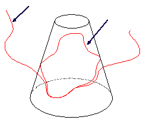
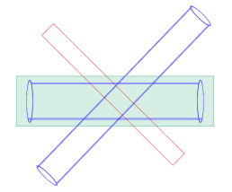
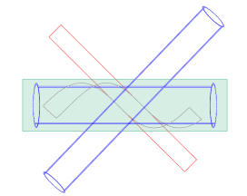

缠绕与展开很像，使用圆锥、圆柱以及基准平面。

在图形窗口背景中右击并选择定向视图→前视图。

选择插入→来自曲线集的曲线→缠绕/展开曲线。
在缠绕/展开曲线对话框的类型列表中，选择缠绕。
选择组成矩形的4条直线，然后单击鼠标中键以完成曲线几何体选择。
选择大圆柱的外轮廓面。
在平面组中，选择选择对象，然后选择图形窗口中的基准平面。
点击确定以关闭对话框并缠绕曲线。

矩形从基准平面缠绕到大圆柱上，记住被缠绕/展开的几何体是关联的，任何对矩形的编辑将会反应到圆柱上映射的样条中。
切割线角度的影响
旋转部件以查看结果。
关闭部件。